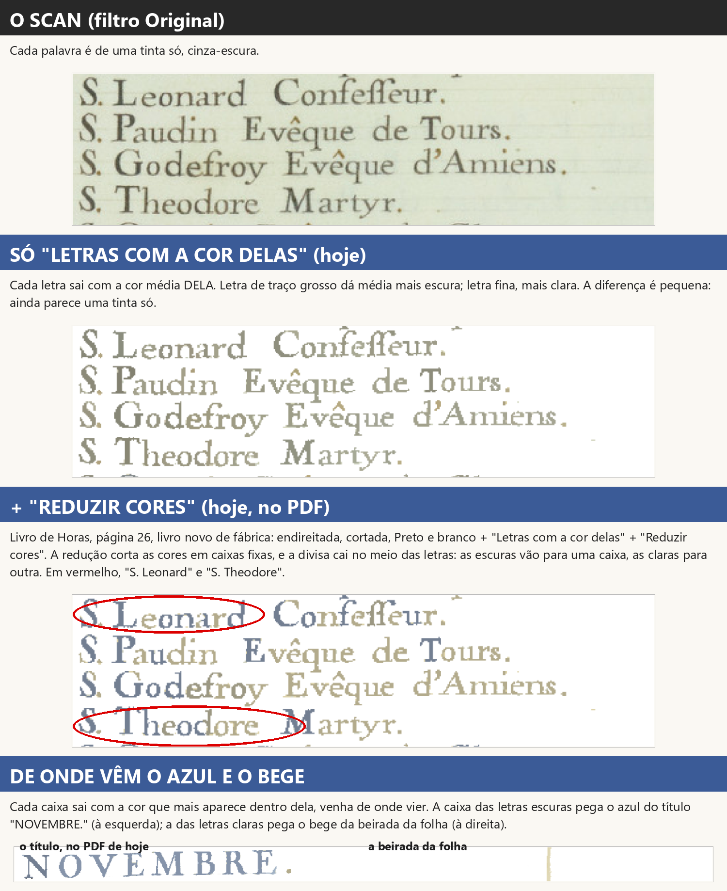
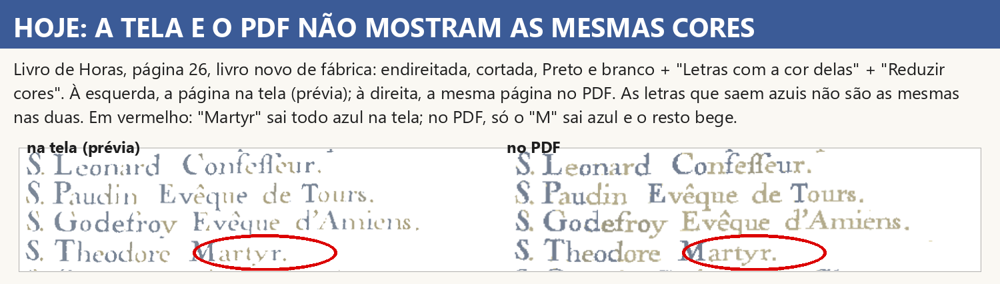
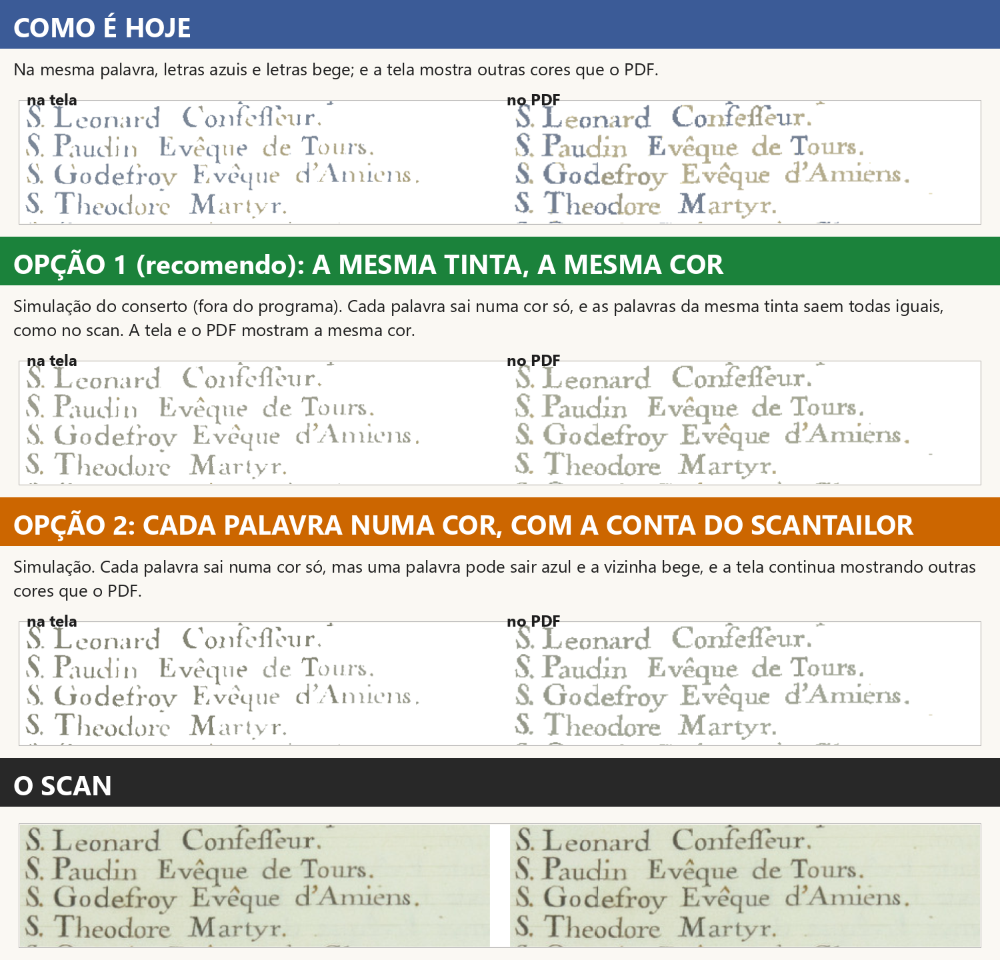
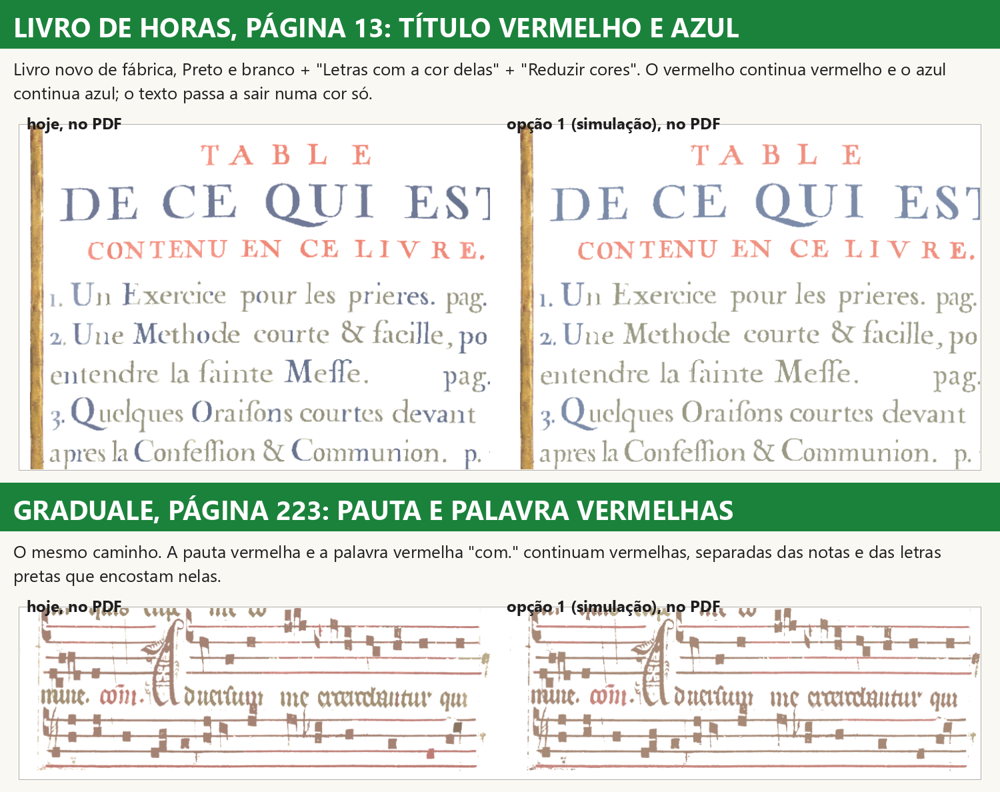
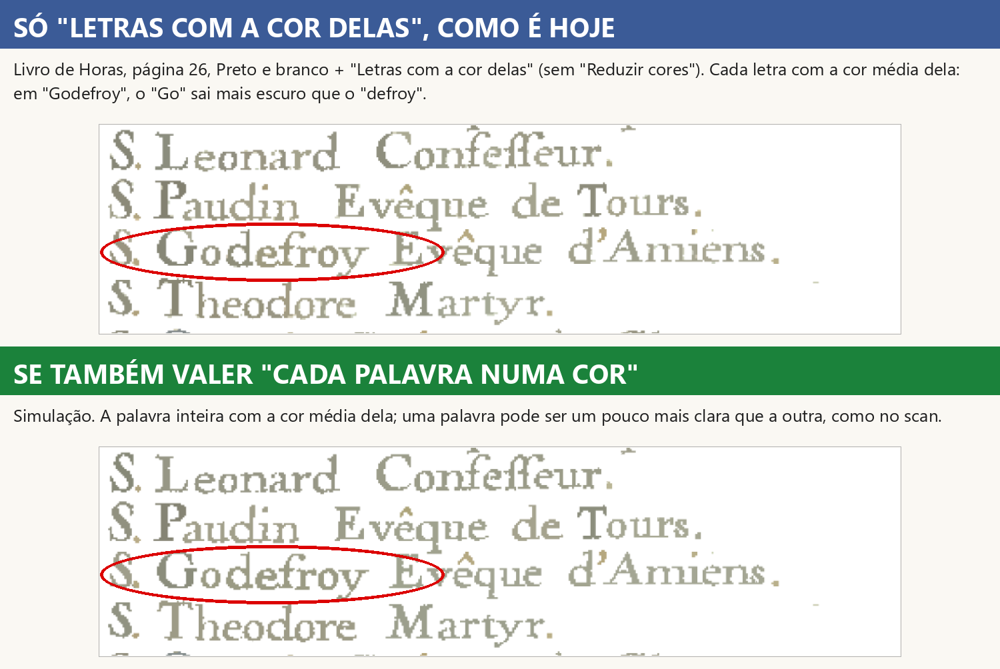

Implementador, 14/11/2026. Só estudo: nenhuma linha do programa mudou (core/, ui/ e raiz intactos; tudo o
que está aqui são scripts de medida em scripts/ e prints em prints/). Ramo palavra-cor-2026-11-14, saído da
versão de teste obra-2026-10-26 (c7e34fd8). Pedido do Samuel: "bota o 13 para ser estudado"; decisão D-701
(13/11): "Consertar: cada palavra sai numa cor só, como no scan (recomendo)".
A mesma palavra sai em duas cores porque o programa pinta cada letra com a média dela e depois corta as cores em caixas fixas cuja divisa cai bem no meio da tinta do texto; cada caixa ainda pega emprestada a cor de outra coisa da página (o azul do título, o bege da beirada da folha). É defeito do programa, não escolha do Kaique. E há um segundo defeito junto: a tela e o PDF não mostram as mesmas cores, porque essa conta muda com a resolução.
tests/test_cores_scantailor.py, tests/test_cores_scantailor_na_tela.py).test_reduzir_cores_na_pagina_de_cor).c8844671): no Preto e branco a redução vai sem o
"forçar preto e branco" (tests/test_decisoes.py::test_d189_reduzir_cores_no_preto_e_branco_nao_forca_preto), e
menos de 2% das letras da Horas 26 viram preto
(tests/test_etapa10b_imagem.py::test_reversao_d189_reduzir_cores_nao_apaga_meia_palavra).tests/test_cartoes_seguem_as_caixinhas.py); tela cheia com as mesmas opções
(tests/test_filtros_tela_cheia.py); Automático com as duas opções
(tests/test_decisoes_automatico_opcoes_do_filtro.py); sem a DLL a página sai como sem as caixinhas
(test_sem_a_dll_sai_como_sem_as_caixinhas, tests/test_falha_do_scantailor_vai_ao_erros_log.py).Caminho da página em todas as medidas: Livro de Horas, página 26, livro novo de fábrica, endireitada, cortada,
Preto e branco + "Letras com a cor delas" + "Reduzir cores", pelo corpo do programa (core.pipeline), sem janela.

ColorSegmenter.cpp, copiado sem mudança na
nossa DLL). Ela pinta cada peça de tinta com a média das cores dela. Letra de traço grosso dá média mais
escura (vermelho entre 131 e 150); letra fina, mais clara (155 a 182), porque tem proporcionalmente mais beirada
misturada com o papel. A mesma tinta vira dezenas de cores próximas. Sozinha, a diferença é pequena.Posterizer.cpp, sem mudança). Ela estica as cores da página
entre a mais escura (122) e o branco e corta cada canal em 4 faixas fixas. Na Horas 26 a primeira divisa cai em
155: no meio da faixa das letras. Letra com média até 155 vai para uma caixa; acima, para outra.Prova. Refiz a conta do ScanTailor em numpy (scripts/m2_causa.py) e ela dá exatamente a cor da DLL em 100%
dos pontos de letra. Em "S. Leonard": "S", "L", "o", "n", "a" com média até 155 saem azuis; "e" (158) e o "r" final
(168) saem bege. Medida "palavra em duas cores" (scripts/m3_palavras.py: as letras juntadas em palavras; a palavra
conta como "duas cores" se a segunda cor ocupa mais de 10% dela): 48% das palavras do calendário no PDF hoje;
32% com só "Letras com a cor delas" (variação suave, de claridade).
De onde veio a conta. É do ScanTailor (código original dele, dentro da nossa DLL). No ScanTailor, com o "forçar preto e branco" de fábrica, a caixa escura vira preto: era o "ANTES" do print da Central (metade preta, metade clara), igual ao ScanTailor. O conserto de 27/10 (D-189) tirou o "forçar" para a letra clara não sumir; com isso a caixa escura passou a sair azul. Ele tratou o sintoma (o preto e a letra apagada), não a causa (a divisa no meio da tinta). O ScanTailor não tem "uma cor por palavra": ele trabalha cor a cor, ponto a ponto; a mesma divisão de palavra acontece nele.

As duas contas do ScanTailor olham a página inteira (o limiar de cada canal na segmentação; "a mais escura" e "a mais frequente de cada caixa" na redução), e a página tem outro tamanho em cada lugar. Parte azul da tinta do calendário: 69% na prévia (110 pontos por polegada), 59% na tela cheia (150), 63% na prévia do Automático (180), 43% a 220 (a resolução do "comparar"), 50% no PDF (300). Pontos de letra com cor visivelmente diferente entre a prévia e o PDF: 36%.
A função que decide a cor de cada letra: core/cores_scantailor.aplicar(...) → cores() → DLL
st_ferramentas_cores (segmentação + posterização). Ela é chamada em dois lugares do core/pipeline.py, os dois
com a mesma função (nenhuma conta copiada): _filtrar (a página com marcação, "Só as letras", "só neste pedaço")
e filtro_com_as_caixinhas (o filtro numa imagem solta).
| Caminho | Por onde passa | Usa a função? | Resolução |
|---|---|---|---|
| PDF ("Confirmar e processar") | processar → _pagina_pronta → _filtrar |
sim | 300 |
| Prévia e miniaturas da tira | GerenciadorPrevias → renderizar_pagina → _filtrar |
sim | 110 |
| Grade "Todas as páginas", folhear, folhas do caderno | as prévias (renderizar_pagina) |
sim | até 160 / 90 / 180 |
| Tela cheia dos filtros | renderizar_com_filtro → renderizar_pagina → _filtrar |
sim | 150 |
| Figurinhas do painel Filtro | _TarefaCartoes → filtro_com_as_caixinhas |
sim (sem a marcação) | 70 |
| "Comparar" da tela ampliada | filtro_com_as_caixinhas |
sim (sem a marcação) | 220 |
| Automático / "Limpar a folha" | grava os dois campos; prévia por renderizar_pagina + compor_como_no_pdf |
sim | 180 e 300 |
| Caixinhas do painel e da tela cheia, "Aplicar em" (só nesta / todas / daqui em diante), desfazer, refazer | só gravam letras_com_a_cor / reduzir_cores na página (_mudar_cores, _gravar_opcao_da_tela_cheia, MARCAS_DA_PAGINA); a imagem vem dos caminhos acima |
— | — |
| "Só neste pedaço" | o pedaço é composto antes; as cores valem na página composta | sim | a do caminho |
| "Tirar o fundo" | aplicar devolve "nada muda" |
sim | — |
Conclusão: a regra já mora num lugar só (bom). O defeito está dentro dela, e ela dá resultado diferente em
cada resolução. Consertando dentro de aplicar, todos os caminhos acima passam a ter o conserto sem tocar em ui/.
(Figurinhas e "comparar" recebem a página sem a marcação: entrada diferente, mesma regra; já era assim.)
O que muda, num lugar só: core/cores_scantailor.py, no ramo do Preto e branco de aplicar.
uma_cor_por_tinta(...):
- junta as letras em palavras (as peças de tinta juntadas na horizontal, com uma folga proporcional à altura das
letras: o espaço entre letras some, o entre palavras fica);
- dentro de cada palavra, junta as peças da mesma tinta (cor parecida; a claridade pesa pouco, porque é ela que
muda entre letra grossa e fina). Peça de outra tinta (capitular vermelha, pauta vermelha encostada nas notas)
fica separada;
- na página, junta as palavras da mesma tinta numa cor só (a média pesada delas);
- pontinhos pequenos (ponto final, apóstrofo, pedaço de acento) seguem a cor da palavra deles.ui/ muda.Simulação, fora do programa (scripts/m5_prototipo.py com M5_PESO_L=0.15 M5_LIMIAR=10, a partir das páginas que o programa de hoje desenha; resultados em _dados/m5-v3):

| Medida | Hoje | Opção 1 (a mesma tinta, a mesma cor) | Opção 2 (cada palavra, com as caixas do ScanTailor) |
|---|---|---|---|
| Horas 26, palavras em duas cores, PDF | 48% | 5% | 4% |
| Horas 26, palavras em duas cores, prévia | 44% | 7% | 25% |
| Horas 26, pontos com cor diferente tela x PDF | 36% | 2% | 32% |
| Horas 13, palavras em duas cores, PDF | 36% | 3% | 3% |
| Horas 13, pontos diferentes tela x PDF | 19% | 4% | 6% |
| Graduale 223, palavras em duas cores, PDF | 18% | 1% | 3% |
A opção 2 junta cada palavra mas mantém as caixas do ScanTailor: a palavra vizinha ainda pode sair de outra cor, e a tela continua diferente do PDF. Por isso o plano segue a opção 1.

O que sobra na simulação (5% na Horas 26): pontinhos (ponto final, apóstrofo, pedaço de acento) que saem de outra cor
que a palavra, e a letra azul da coluna da esquerda. Na Graduale, a prévia (110) ainda difere do PDF em 18% dos
pontos: nessa resolução a própria segmentação parte as notas e as letras de outro jeito (já era assim com só "Letras
com a cor delas"). Testei também decidir a tinta pela cor do miolo da letra (scripts/m7_miolo.py): deixa o texto
mais escuro, mais perto do scan, mas pinta pontos finais de laranja; descartado como está.
A prova que vai cobrar o mesmo resultado em todos os caminhos (arquivo novo tests/test_d701_palavra_numa_cor.py,
com a medida "palavra em duas cores" do scripts/m3_palavras.py passada para os testes):
_filtrar. Cobra: nenhuma palavra em duas
cores; o vermelho continua vermelho e o azul continua azul; nenhuma letra vira preto nem branco (D-189). Tem de
falhar no código de hoje (vou conferir isso antes de consertar)._filtrar (prévia e PDF),
filtro_com_as_caixinhas (figurinhas e "comparar") e em duas resoluções; cobra a mesma cor de cada palavra em todos
(diferença menor que a que se vê)._pagina_pronta (PDF), renderizar_pagina a 110, 150 e 180 e renderizar_com_filtro (tela cheia): palavras em
duas cores abaixo de 8% em todas (hoje 44% a 54%); pontos com cor diferente entre a prévia e o PDF abaixo de 5%
(hoje 36%); a medida da D-189 (letra que vira preto) continua abaixo de 2%.test_d189_...nao_forca_preto continua valendo: o plano mantém o
"forçar preto e branco" desligado no Preto e branco.Riscos. - Velocidade: só as páginas com "Reduzir cores" no Preto e branco pagam a conta nova (juntar peças e palavras numa página de 300 pontos por polegada; estimo 0,3 a 0,6 segundo por página, a medir); as outras não fazem conta nenhuma a mais. A posterização do ScanTailor deixa de rodar nessas páginas (economiza 20 a 30 ms). Filtro de velocidade do GitHub antes e depois. - Letra apagada (D-189): a cor nova é a média da própria tinta; não há "forçar preto e branco", então nenhuma letra vai para o branco. A medida da D-189 fica na prova. - Duas tintas parecidas: se uma rubrica muito desbotada tiver cor perto da tinta do texto, as duas podem virar uma só. É o limite de "cor parecida"; a prova da Horas 13 e da Graduale cobra que o vermelho e o azul ficam. - Não é mais o ScanTailor: no Preto e branco, "Reduzir cores" deixa de ser a conta do ScanTailor (a regra da Fase 2 era "igual ao ScanTailor"). A D-701 é mais nova e pede uma coisa que o ScanTailor não faz; está dito na pergunta 1.
Pergunta 1 (pode já estar respondida: se a gerente achar que "como no scan" já decide, não precisa perguntar).
No painel "Filtro da página", em "Mais ajustes", com o Preto e branco, as caixinhas "Letras com a cor delas" e "Reduzir cores" marcadas fazem as letras saírem coloridas e com poucas cores. Hoje, no Livro de Horas página 26, a mesma palavra sai metade azul e metade bege, e a tela mostra outras cores que o PDF. É defeito do programa: a conta veio do ScanTailor, que trabalha cor a cor e não palavra a palavra. Você mandou consertar em 13/11 ("cada palavra sai numa cor só, como no scan"). O print acima ("COMO É HOJE", "OPÇÃO 1", "OPÇÃO 2", "O SCAN") mostra as duas saídas.
O que você escolhe: - Opção 1 (recomendo): a mesma tinta, a mesma cor. Cada palavra numa cor só, e todo o texto da mesma tinta na mesma cor, como no scan. A tela e o PDF passam a mostrar a mesma cor. O vermelho e o azul continuam. No Preto e branco, "Reduzir cores" deixa de usar a conta do ScanTailor (nos outros filtros continua igual). - Opção 2: cada palavra numa cor, mantendo a conta do ScanTailor. A palavra fica inteira, mas a vizinha pode sair azul enquanto esta sai bege, e a tela continua mostrando outras cores que o PDF. - Só comentário.
As caixinhas continuam desligadas de fábrica e no mesmo lugar. Nada muda em livro que não usa as duas. Situação: em estudo; nada foi mudado no programa.
Pergunta 2.

No mesmo lugar, com só "Letras com a cor delas" marcada (sem "Reduzir cores"), cada letra sai com a cor média dela: em "Godefroy", o "Go" sai um pouco mais escuro que o "defroy". Você aprovou essa caixinha assim ("Está bom"); a diferença é pequena. Não é defeito: é como a conta do ScanTailor pinta cada letra.
O que você escolhe: - Deixar como está (recomendo): só muda quando "Reduzir cores" também estiver marcada. Nada do que você já testou muda. - Também "cada palavra numa cor só" com só "Letras com a cor delas": a palavra inteira com a cor média dela; uma palavra pode ser um pouco mais clara que a outra. - Só comentário.
Situação: em estudo; nada foi mudado.
prints/bug-beirada-direita-horas26-pb.png (à esquerda o scan, à
direita o Preto e branco). Pode já ser conhecido (faixa da beirada, CLAUDE.md §9); a gerente confere.ONDE-PAREI.md (o andamento), este relatório (relatorio.md/.html/.pdf), prints/ (5 prints + o do bug).scripts/m1_pagina.py (a página pelo caminho inteiro), m2_causa.py (a conta refeita = DLL), m3_palavras.py (a
medida "palavra em duas cores" e a tela x PDF), m4_render.py (as páginas em cada resolução), m5_prototipo.py (as
duas opções), m7_miolo.py (a variante descartada), m6_prints.py (os prints). Os dados ficam em _dados/ (fora
do git)._dados/local). Nenhum teste do programa foi rodado: nada do
programa mudou.Editor de Impressão · gerado em 14/11/2026 às 13:28